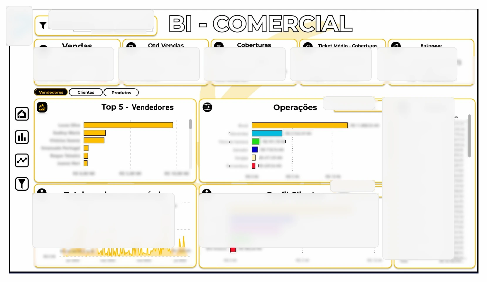
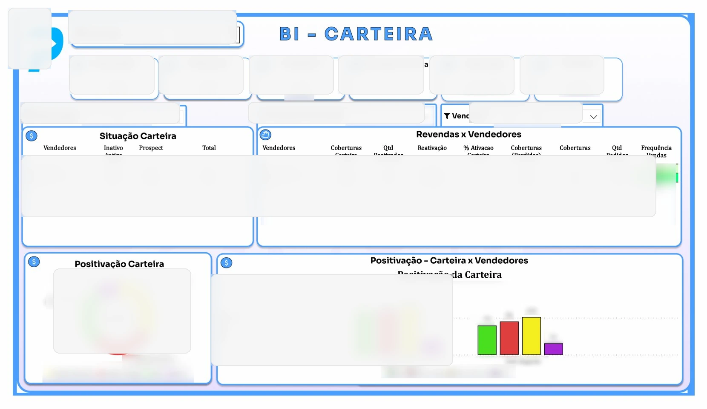
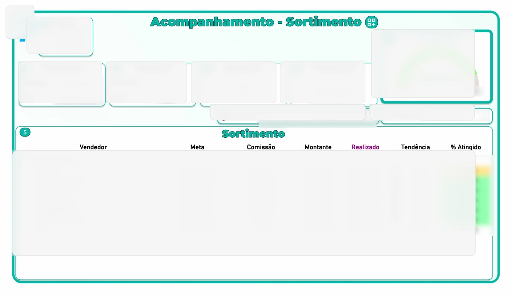
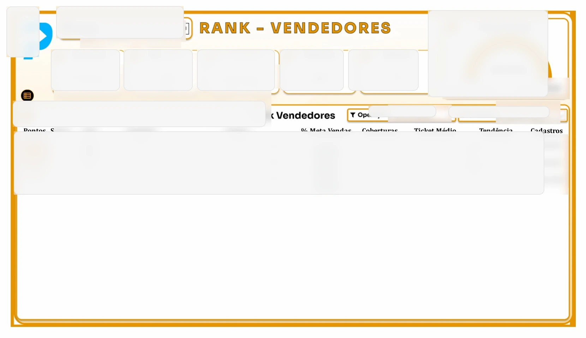

Problema de negócio
A rotina anterior concentrava a extração de dados via API nas atualizações do Power BI e exigia tratamento manual em planilhas pesadas. Isso dificultava a consolidação de informações comerciais e atrasava a preparação de análises recorrentes para gestão.
Minha atuação
Desenvolvi um fluxo de integração com APIs do ERP Omie, tratamento de dados com Python e disponibilização de conjuntos organizados para análises comerciais. Além do pipeline, atuei no suporte analítico dos relatórios em Power BI utilizados para acompanhamento de desempenho de vendas.
O que os relatórios analisavam
- vendas por indústria e marca;
- comparação entre vendas de produtos de terceiros e próprios;
- evolução de vendas no período consolidado da empresa e também por projeto;
- rankings de vendedores e campanhas comerciais;
- acompanhamento da carteira de clientes, ativações, reativações e perdas;
- vendas x metas x entregue x percentual de comissão atingida.
Visão da arquitetura
O fluxo utilizava extração por API, transformações com Pandas e Polars e organização dos dados em camadas. Os relatórios finais eram consumidos no Power BI com indicadores voltados à operação comercial.
Exemplos visuais sanitizados
As imagens abaixo foram propositalmente sanitizadas para remover valores, nomes, marcas, datas e outros identificadores. O objetivo é demonstrar a estrutura dos relatórios e o tipo de análise realizada, sem divulgar dados da empresa.




Detalhe de implementação em Power BI
Em um dos rankings, desenvolvi uma barra em SVG para representar a venda principal e uma segunda barra sobreposta indicando o percentual da venda já entregue. Isso ajudava a sinalizar situações em que a meta de venda havia sido atingida, mas ainda existia risco de perda por falta de entrega.
Decisões técnicas
- separação entre dados extraídos, tratados e preparados para indicadores comerciais;
- integrações sujeitas a falhas transitórias e paginação, com retomada do processamento;
- redução de tarefas manuais recorrentes de consolidação em Excel;
- apoio à construção e manutenção de indicadores em Power BI para acompanhamento de vendas, metas e carteira;
- preservação da confidencialidade por meio de exemplos públicos sem dados originais.
Limites e confidencialidade
O repositório corporativo, dados de clientes, credenciais, endpoints internos e dashboards originais não são divulgados. As imagens desta página são versões sanitizadas e algumas datas foram propositalmente alteradas para reduzir qualquer risco de identificação operacional.